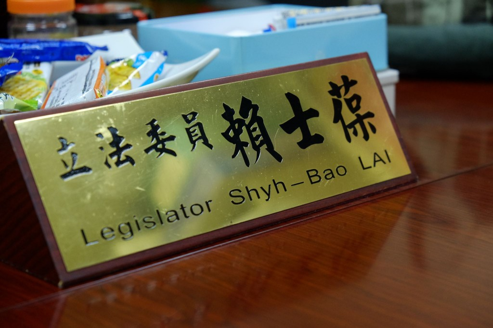

photo credit：關鍵評論網 羊正鈺
這一次，立法院再不到一百天就有機會重新洗牌了，TNL試著扮演好關鍵瞎子的角色，從不同的角度帶大家一起思考「我們該選出什麼樣的立委？」
我們用五個關鍵問題，來問剛下台的政務官、國民兩黨的黨鞭、第三勢力候選人、資深媒體人、政論節目主持人、以及青年代表，一起來看看他們的真情流露、直言無忌吧：
賴士葆曾擔任政大企管所所長，直到1998年決心投入政治，代表新黨參選立委並順利當選。10多年來，他也曾因選票分散而高票落選，一度重返校園當教授、主持政論節目。2004年他重新出發，代表新黨加入國民黨再次參選，以全國第3高票當選。
2015年1月19日，賴士葆出任政策會執行長（大黨鞭）。他表示，這個位置「有功無賞、打破要賠」，但一定要捲起袖子和大家一起努力。事實上，黨鞭必須代表黨主席督策同黨委員、執行黨紀，更要為政黨決定各提案的方向和通過方針，影響力不小。
賴士葆（文後簡稱賴）：
以《自由經濟示範區特別條例》為例，我們當時處理了好幾個月，但最後只討論了3條，而且最後這3條都沒有通過。
或許是黨團協商沒有被限縮，才會讓委員會的功能被架空。我個人認為，假設一個法案有30條，在委員會已有28條有共識，那麽黨團協商就只能討論那2條沒達成共識的。
而現在的情形是這30條都可以全部重談，根本沒有尊重委員會的專業，審法案等於是審假的！按常理來說，黨團協商的功能應該是去協商「有爭議的部分」。
賴：每個立法委員的理念和做法不一樣，對於「好立委」的定義也不一定相同。我一向的觀念是：「我只替人民求平安，如果你被政府欺負，我絕對幫你講話、發聲，也會拚全力幫你爭取。」
過去在大選區（複數選區）我可以不花這麼多心思在跑選區的，但現在根本不得不理，甚至還有官員對我們施壓，認為我們必須去幫忙地方的事情。
我在立法院10多年了，很遺憾在這裡再怎麼努力，都很容易被扣上「蓄意圖利誰」的帽子。誰推什麼法案就被貼上什麼標籤，讓立法院、甚至是台灣整個社會的負面能量變得很多，更對埋頭苦幹的立委非常不公平。
賴：觀察一位候選人，眼睛緊盯著他們端出的牛肉是什麼樣子，而不是只因為某立委的行徑讓我覺得「好爽」，講話好大聲好會罵人，就投給他。我們必須靜下心來思考，他做的這些事情，對這個社會有什麼實質貢獻和價值？
我的建議：「多看、多聽。千萬不要只看候選人罵得比較兇就投他。投票時必須提醒自己，理性多一點，感性少一點。」
賴：
賴：我對楊玉欣委員印象深刻，也非常敬佩她。
一直以來她都致力於幫弱勢說話，但她提的案子大家都不會太注意。即使如此，她仍然非常認真努力，是最典型默默耕耘型的委員，對於她這次沒有被提名連任不分區，我也覺得非常可惜。
賴：黨鞭就是政黨的班長，是類似系主任的角色，屬於服務性質的。
黨鞭和其他委員的關係，不是總經理對經理的上下關係，而是平等的。我當過研究所所長，因此我也是用所長的理念在擔任大黨鞭的。
我很重視立委自主，因為我清楚自己的職責是「服務」黨團，必須尊重每個委員會的專業。因此我不喜歡指揮，法案的走向，更不會是我一個人說了算。
賴士葆：我們常說「少數服從多數」，但立法院卻縱容少數一味「否決多數」
採訪：羊正鈺、李牧宜
對於立法院、立委們，或許很多人都是透過報章雜誌、電視節目而認識他們。如今在網路、社群發燒之下立法院一個五秒鐘的畫面、委員們在臉書說一句話都可能因此瘋傳，但是當我們只透過片面、簡短的資訊來解讀，是否就像「瞎子摸象」一樣對我們國會最高殿堂有誤解呢？
這一次，立法院再不到一百天就有機會重新洗牌了，TNL試著扮演好關鍵瞎子的角色，從不同的角度帶大家一起思考「我們該選出什麼樣的立委？」
我們用五個關鍵問題，來問剛下台的政務官、國民兩黨的黨鞭、第三勢力候選人、資深媒體人、政論節目主持人、以及青年代表，一起來看看他們的真情流露、直言無忌吧：
《人物系列之八》國民黨政策執行長（大黨鞭）賴士葆
賴士葆曾擔任政大企管所所長，直到1998年決心投入政治，代表新黨參選立委並順利當選。10多年來，他也曾因選票分散而高票落選，一度重返校園當教授、主持政論節目。2004年他重新出發，代表新黨加入國民黨再次參選，以全國第3高票當選。
2015年1月19日，賴士葆出任政策會執行長（大黨鞭）。他表示，這個位置「有功無賞、打破要賠」，但一定要捲起袖子和大家一起努力。事實上，黨鞭必須代表黨主席督策同黨委員、執行黨紀，更要為政黨決定各提案的方向和通過方針，影響力不小。

Photo Credit: 關鍵評論網 羊正鈺
問題一、立法院運作到底出了什麼問題？
賴士葆（文後簡稱賴）：
-
黨團協商沒「透明化」
- 現在的委員會都已經有實況轉播的服務了，人人都可以上立法院的IVOD系統看委員會的質詢、討論。黨團協商要怎麼改革呢？很簡單，只要做到跟委員會一樣就好了，讓人民即時知道黨團協商裡究竟在協商什麼。
-
黨團協商讓委員會功能被架空
- 什麼是Majority Rule（多數統治）？就是少數服從多數、多數尊重少數。但我們的制度根本是縱容少數可以一味的否決多數。
以《自由經濟示範區特別條例》為例，我們當時處理了好幾個月，但最後只討論了3條，而且最後這3條都沒有通過。
或許是黨團協商沒有被限縮，才會讓委員會的功能被架空。我個人認為，假設一個法案有30條，在委員會已有28條有共識，那麽黨團協商就只能討論那2條沒達成共識的。
而現在的情形是這30條都可以全部重談，根本沒有尊重委員會的專業，審法案等於是審假的！按常理來說，黨團協商的功能應該是去協商「有爭議的部分」。
問題二、我們需要一個什麼樣的「好立委」？
賴：每個立法委員的理念和做法不一樣，對於「好立委」的定義也不一定相同。我一向的觀念是：「我只替人民求平安，如果你被政府欺負，我絕對幫你講話、發聲，也會拚全力幫你爭取。」
過去在大選區（複數選區）我可以不花這麼多心思在跑選區的，但現在根本不得不理，甚至還有官員對我們施壓，認為我們必須去幫忙地方的事情。
台灣的選民是很挑剔的，他們認為「我要在電視上看到你替我說話，在基層我也要看到你，掃街、紅白帖、做選民服務」。哪一個立委有這麼多時間，可以在滿足選民的期待之下，又盡到立委的天職「修法、審預算」呢？民意代表的辛苦，是外界無法感受到的。
一位好的立委，是不會刻意對別人「扣上帽子」的。
- 賴士葆
我在立法院10多年了，很遺憾在這裡再怎麼努力，都很容易被扣上「蓄意圖利誰」的帽子。誰推什麼法案就被貼上什麼標籤，讓立法院、甚至是台灣整個社會的負面能量變得很多，更對埋頭苦幹的立委非常不公平。
問題三、選民該怎麼檢視候選人適不適任？
賴：觀察一位候選人，眼睛緊盯著他們端出的牛肉是什麼樣子，而不是只因為某立委的行徑讓我覺得「好爽」，講話好大聲好會罵人，就投給他。我們必須靜下心來思考，他做的這些事情，對這個社會有什麼實質貢獻和價值？
我的建議：「多看、多聽。千萬不要只看候選人罵得比較兇就投他。投票時必須提醒自己，理性多一點，感性少一點。」
Photo Credit: 關鍵評論網 羊正鈺
問題四、2016年第一會期，迫切需要通過的法案有哪些？
賴：
-
台灣有個嚴重的問題：我們幾乎被國際「邊緣化」了。
-
但事實上，我們的經貿實力是排名世界前20的。這代表什麼？不跟國際接軌的結果，就是我們一天一天在退步。服貿不給過、貨貿也不給過，我們「自由化」的決心究竟去哪裡了？
把自己關起來，只是對國際證明我們決心不夠。很多人認為這是保護自己的方法，但這很難不衝擊到自己人。現在若不開放，把門硬生生的關起來，我們的子孫會受到更大的傷害。反對黨認為我們短視，但我們更是著急下一代的走向，他們的未來在哪裡？
- 賴士葆
-
但事實上，我們的經貿實力是排名世界前20的。這代表什麼？不跟國際接軌的結果，就是我們一天一天在退步。服貿不給過、貨貿也不給過，我們「自由化」的決心究竟去哪裡了？
-
學貸和創業的機制
-
就學貸方面，現在的法律規定年輕人工作第1年後就一定要開始還，但很多年輕人的薪水都是從22k開始領的，這不是太逼人了嗎？因此我主張延長到5年。
不管主張修什麼法案，我最重視如何給社會多一點「正面能量」，不要什麼都以偏概全、什麼都選擇衝撞。現在一個委員可能推了10個很好的案子，但其中只有1個有爭議，大家就盡全力把人家K死，這樣對社會的進步是完全沒有助益的。
-
就學貸方面，現在的法律規定年輕人工作第1年後就一定要開始還，但很多年輕人的薪水都是從22k開始領的，這不是太逼人了嗎？因此我主張延長到5年。
問題五、現任立委中哪位是您心目中印象最深刻？
賴：我對楊玉欣委員印象深刻，也非常敬佩她。
一直以來她都致力於幫弱勢說話，但她提的案子大家都不會太注意。即使如此，她仍然非常認真努力，是最典型默默耕耘型的委員，對於她這次沒有被提名連任不分區，我也覺得非常可惜。
問題六、當政策執行長和一般立委的差別在那裏？
賴：黨鞭就是政黨的班長，是類似系主任的角色，屬於服務性質的。
黨鞭和其他委員的關係，不是總經理對經理的上下關係，而是平等的。我當過研究所所長，因此我也是用所長的理念在擔任大黨鞭的。
我很重視立委自主，因為我清楚自己的職責是「服務」黨團，必須尊重每個委員會的專業。因此我不喜歡指揮，法案的走向，更不會是我一個人說了算。
責任編輯：李牧宜
核稿編輯：楊之瑜
核稿編輯：楊之瑜
SHARE：